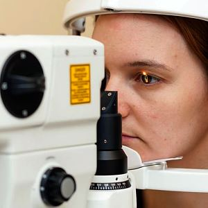
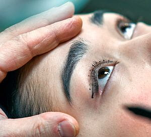

Servicii
Consultații oftalmologice
Adulţi
- măsurarea refracției prin autorefractometrie și prescrierea corecției optice
- examinarea fundului de ochi și a periferiei retiniene
- tonometrie – măsurarea tensiunii intraoculare
Copii
- măsurarea refracției cu cicloplegie prin schiascopie sau autorefractometrie
- examinarea fundului de ochi
- examinarea vederii binoculare și a vederii în relief
- tratamente optice, ortoptice si pleioptice

Lentile de contact
- măsurarea refracției prin autorefractometrie si prescrierea corecției optice
- măsurarea razei de curbură a corneei
- instruire și probă
Examinarea vederii binoculare la copii și adulți
- Examinarea vederii binoculare și a vederii stereoscopice la copii
- Examinarea staticii și dinamicii oculare la adulți
Tonometrie – măsurarea tensiunii intraoculare
- prin metoda noncontact (tonometrul noncontact Huwitz)
- prin metoda aplanației (aplanotonometrul Goldmann)
Măsurarea tensiunii intraoculare este o parte esențială a consultației oftalmologice. Valori crescute pot duce la suferința și degradarea nervului optic, cu deteriorarea ireversibilă a câmpului vizual. De aceea, măsurăm presiunea intraoculară tuturor pacienților pe care îi consultăm ca parte a screeningului pentru depistarea precoce a glaucomului.
Biometrie optică și ultrasonică
Ecografia oculară în mod A combinată cu o serie de formule de ultimă generație, permite calcularea cu precizie a puterii implantului de cristalin folosit în chirurgia cataractei. Metoda imersiei crește suplimentar precizia măsuratorii asigurând un rezultat optim al chirurgiei cataractei.
Campimetrie computerizată în cabinet de oftalmologie
Campimetrie statică – măsurarea câmpului vizual cu perimetrul computerizat Optopol.
Strabism – diagnostic, tratament medical/chirurgical
Strabismul este o afecțiune oculară în care ochii nu sunt aliniați corect și nu se uită în aceeași direcție. De obicei, un ochi este îndreptat spre înăuntru (strabism convergent) sau spre în afară (strabism divergent), dar pot exista și alte tipuri de deviații. Strabismul poate apărea la orice vârstă, dar este mai frecvent la copii.
Trebuie reținut că apariția unui strabism la un copil (în special) interferă sever cu dezvoltarea armonioasă a analizatorului vizual și a vederii stereoscopice. Este esențial, deci, să tratăm strabismul de îndată ce apare, înainte ca efectele sale să devină ireversibile.
Diagnosticul strabismului implică o evaluare oftalmologică completă efectuată de un medic oftalmolog.
Cataractă - diagnostic și tratament
Facoemulsificarea – cunoscuta impropriu sub denumirea de „laser pentru cataractă” – constă din fragmentarea ultrasonică a nucleului cristalinian. Astfel se permite extracția acestuia printr-o incizie foarte mică de 1,8 – 2,8mm.
Se obțin astfel rezultate anatomice şi funcționale excelente:
- astigmatism indus chirurgical minim;
- risc de endoftalmită practic nesemnificativ;
- recuperare integrală şi rapidă a funcției vizuale.

Când și de ce chirurgia cataractei
Opacifierea cristalinului, una dintre lentilele intraoculare care are rolul de a focaliza pe retină lumina care pătrunde în ochi, constituie cataracta. Unul dintre primele semne ale cataractei este miopizarea, adică modificarea dioptriilor. Apare posibilitatea de a vedea la aproape fără ochelari; este o falsă „revenire a vederii”. Un alt indiciu este schimbarea mai frecventă a ochelarilor.
Ulterior, scăderea de vedere care se instalează nu mai poate fi corectată prin schimbarea ochelarilor. Ca atare, singurul remediu eficace este înlăturarea chirurgicală a cristalinului opacifiat și înlocuirea lui cu implantul de cristalin. Acesta este o lentilă artificială a cărei putere dioptrică va fi calculată preoperator astfel încât să elimine total sau parțial necesitatea portului corecției optice (a ochelarilor).
Implantul de cristalin va fi ales de comun acord în urma unei discuții între medicul chirurg oftalmolog și pacient, în funcție de stilul de viață și de particularitățile fiecărui caz în parte. La cabinetul nostru folosim o gamă larga de cristaline artificiale foldabile: monofocale, asferice, torice, multifocale, multifocale torice hidrofobe sau hidrofile. Acestea sunt introduse în ochi printr-o incizie mică în urma extracției cristalinului opacifiat prin facoemulsificare
De reținut, de asemenea, că în cursul evoluției unei cataracte există o perioadă optimă pentru intervenția chirurgicală în care trauma chirurgicală e minimă, recuperarea rapidă și rezultatele excelente. Acest interval chirurgical optim vă va fi semnalat de către medicul chirurg oftalmolog împreună cu care veți lua decizia de a beneficia de chirurgia cataractei.
Tipuri de implante agreate în Clinica ArtVision Med
Pentru chirurgia cataractei folosim toate tipurile de implante de cristalin, de la clasicele monofocale, până la mult mai sofisticatele torice sau multifocale. Cele mai recente inovații în materie de design optic sunt noile lentile enhanced precum și EDOF (Extended Depth Of Focus) care permit extinderea profunzimii focarului, ameliorarea curbei de defocalizare, reducerea aberațiilor și ameliorarea sensibilității la contrast, implante cu care avem deja o experiență amplă. Implantăm cu predilecție cristaline Alcon și Johnson&Johnson, dar și Zeiss, Cristalens sau Medicontour. Sunt producători de cristaline artificiale (lentile intraoculare) a căror calitate este confirmată pe plan mondial. Predictibilitatea, stabilitatea și fiabilitatea acestor materiale dovedită în cei 18 ani de experiență personală ne-au convins de superioritatea lor incontestabilă.
De altfel, intervențiile chirugicale sunt realizate pe un aparat de facoemulsificare Alcon, Centurion Active Sentry. Este special proiectată și construită pentru operația de cataractă, concepută pentru siguranța și controlul deplin al operației de cataractă
Chirurgia pterigionului cu autogrefă conjunctivală
Cura chirurgicală a pterigionului s-a limitat pentru o perioadă lungă de timp la excizia țesutului fibrovascular și sutura plăgii rezultate. Neajunsul acestei tehnici stă în rata de recidivă foarte ridicată, peste 30% reapărând în câteva luni postoperator. Folosim, de mai bine de 20 ani, metoda autogrefei conjunctivale pentru tratamentul acestei afecțiuni. Aceasta metodă asigură o rată de recidivă a pterigionului practic nesemnificativă.
Blefaroplastie – chirurgie estetică – rejuvenare

Blefaroplastia este o procedură chirurgicală care corectează aspectul pleoapelor superioare și inferioare.
Este o operație estetică, dar nu numai. Aceasta se efectuează și din rațiuni de funcționalitate. Astfel, în primul caz, intervenția urmărește eliminarea excesului de piele, grăsime sau mușchi de pe pleoape.
Se obține un aspect mai tânăr și mai odihnit al ochilor. Se estimează că o blefaroplastie te face cu 10 ani mai tânăr.
Apoi, rațiunile practice impun blefaroplastia când excesul de piele al pleoapelor deranjează. Respectiv când împiedică vederea și obosesc ochii.
Procedura de blefaroplastie implică o serie de etape bine definite. Respectiv marcarea zonelor de intervenție, efectuarea inciziilor și eliminarea excesului de piele – eventuala tonifiere a mușchilor. După aceea inciziile sunt închise cu ajutorul suturilor. Acestea din urmă, de regulă, se vor dizolva în timp și vor deveni invizibile.
Rezultatele blefaroplastiei sunt vizibile imediat după operație. Mai multe detalii despre blefaroplastie, chirurgia pleoapelor care vă întinerește…
Tomografia în coerență optică – OCT
Tomografia în coerență optică (OCT) este o tehnologie medicală non-invazivă utilizată în principal în oftalmologie pentru a obține imagini detaliate ale țesuturilor și structurilor din interiorul ochiului.
Principiul de funcționare al OCT constă în utilizarea luminii cu lungime de undă în domeniul spectral al infraroșului apropiat. Un fascicul de lumină este direcționat către țesutul pe care se dorește să-l investigăm. O mică parte din lumina reflectată de țesut este captată și comparată cu un fascicul de referință. Această comparație se realizează cu ajutorul interferenței optice, iar rezultatul este utilizat pentru a reconstrui o imagine tridimensională a structurilor interne ale ochiului.
Avantajul principal al OCT constă în capacitatea sa de a furniza imagini cu rezoluție înaltă și detalii fine, permite medicului oftalmolog să evalueze în mod precis structurile oculare și să detecteze anomaliile sau bolile. De exemplu, OCT-ul poate fi utilizat pentru a examina nervul optic, retina, corneea și alte structuri ale ochiului, ajutând la diagnosticarea și monitorizarea afecțiunilor precum degenerescența maculară, glaucomul, edemul macular sau alte boli retiniene.
Procedura OCT este nedureroasă și durează în general câteva minute. Pacientul stă în fața unui dispozitiv OCT, iar aparatul scanează ochiul fără a necesita contact direct cu acesta. În timpul scanării, medicul oftalmolog poate vizualiza imaginile în timp real și le poate interpreta. Astfel va fi stabilit un diagnostic corect.
Tomograful REVO NX deține recordul în ceea ce privește frecvența de lucru, operând cu 127 000 scanări pe secundă. Această lucru se traduce printr-o rezoluție excelentă, fiind capabil să evidențieze structuri de 5-12 microni. Mai mult, fiind capabil să urmărească mișcarea globulelor roșii în vasele de sânge, permite efectuarea de angiografii complet neinvazive, fără substanță de contrast.
Tomografia în coerență optică (OCT) este un atu important în diagnosticarea, tratarea și urmărirea a numeroase afecțiuni oculare, de la retinopatii diabetice, degenerescențe maculare și până la glaucom.
Glaucom - diagnostic și tratament
Trabeculectomia și sclerectomia nonperforantă sunt metode chirurgicale de normalizare a presiunii intraoculare pe care le propunem pacienților a căror boală nu răspunde satisfăcător tratamentelor medicale (picături) sau tratamentului laser.
La ARTVISION MED efectuăm screeningul, diagnosticul și tratamentul glaucomului precum și controlul evoluției acestuia.
Tratamente și intervenții pentru glaucom
Glaucomul primitiv cu unghi deschis este o neuropatie optică cronică, progresivă și asociată de cele mai multe ori cu creșteri ale presiunii intraoculare. Apar, de asemenea, deficite caracteristice de câmp vizual. Glaucomul cu unghi deschis nu este simptomatic până în stadii avansate ale bolii. Atunci când, de regulă, este deja prea târziu.
Acest tip de glaucom nu doare si nu afectează vederea centrală până în stadiile tardive. Cu alte cuvinte, putem avea glaucom fără să știm și să aflăm când este prea târziu. De aceea este extrem de important ca medicul oftalmolog să caute activ semnele bolii chiar în lipsa simptomatologiei prin măsurarea presiunii intraoculare, evaluarea nervului optic și, în caz de dubiu, efectuarea câmpului vizual, a tomografiei de nerv optic și a pahimetriei corneene.
În ceea ce privește tratamentul, există un arsenal larg de mijloace terapeutice începând cu tratamentul medical (picături) și terminând cu intervențiile laser și chiar cele chirurgicale care pot opri evoluția nefavorabilă a glaucomului. În ceea ce privește tipurile de picături, există o gamă largă de produse, de la clasicele miotice si beta-blocate păna la mai modernii inhibitori de anhidrază carbonica sau analogi de prostaglandine, singure sau in combinații.
Pacientul împreuna cu medicul oftalmolog stabilesc de comun acord strategia terapeutică pe care o vor ajusta în timp în funcție de evoluția bolii. Un tip special de glaucom este glaucomul cu unghi închis; acesta se manifestă foarte zgomotos, unilateral de obicei, cu dureri importante instalate relativ rapid, scădere de vedere si ochi roșu. Poate duce relativ rapid la pierderi importante și definitive ale vederii.
Tratamentul este chirurgical sau laser, după indicația medicului oftalmolog.
Tratamente laser
- Iridotomie bazala în tratamentul şi profilaxia glaucomului cu unghi închis și capsulotomie în tratamentul cataractei secundare – laser NdYAG.
- Panfotocoagulare laser a retinopatiei diabetice.
- Tratamentul laser al edemului macular prin grid macular.
- Profilaxia dezlipirii de retină prin pexia laser a leziunilor rhegmatogene din periferia retinei – laser Argon VITRA Quantel Medical.
Chirurgia cristalinului clar
– lensectomia refractivă
Una dintre ramurile chirurgiei refractive se adresează cristalinului și constă în înlocuirea acestuia cu un implant de cristalin. Aceasta se face în așa fel încât să anuleze orice viciu de refracție preexistent fie el astigmatism, miopie sau hipermetropie. Precizia metodelor moderne de calcul biometric permite obținerea unui rezultat dioptric postoperator excelent.
Unul dintre avantajele deloc de neglijat ale acestei metode este ca pacientul care a urmat un astfel de tratament nu va mai face niciodată cataractă. Indicația chirurgicală va fi stabilită de către medicul oftalmolog în urma consultației.